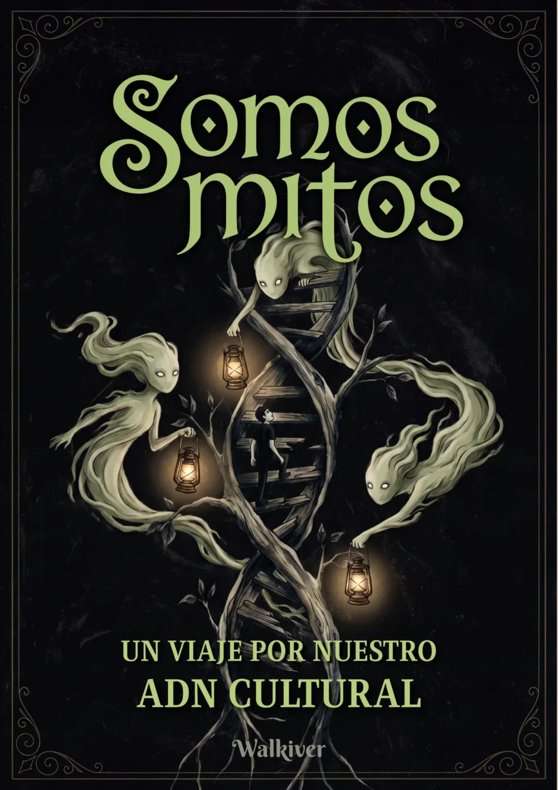
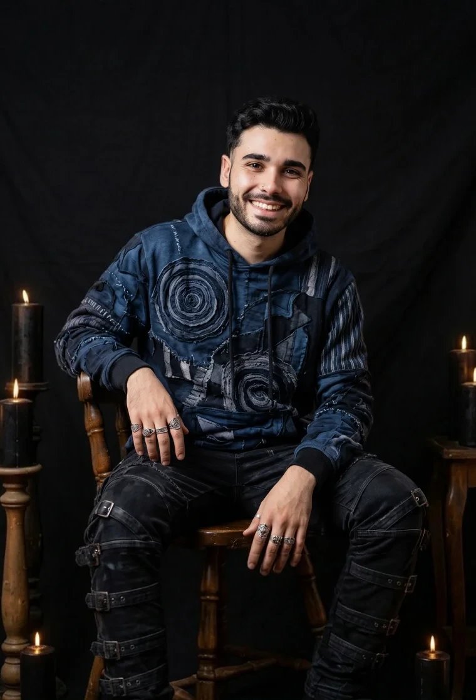

20% OFF · todo 2026
E-book · Somos Mitos
No son solo historias antiguas.
Son la forma en que intentamos entender lo que no tiene nombre.
Un viaje por el lenguaje invisible que sigue moldeando quiénes somos.


Sobre mí
Una vida entre mitos y criaturas
I ¿Quién es Walkiver?
Soy un artista y creador de contenido uruguayo apasionado por la fantasía, la mitología y el diseño de personajes. Mi trabajo combina escultura, storytelling y exploración creativa para dar vida a mi propio universo artístico.
Desde chico encontré en la fantasía un espacio donde la imaginación no tiene límites, y hoy canalizo esa misma energía para construir el mundo creativo que habita en Walkiver.
II ¿A qué me dedico?
Creo arte multidisciplinario enfocado en esculturas estilo Art Toys, inspiradas en especies y objetos de fantasía oscura. Cada obra es única, original e irrepetible, pensada tanto desde lo estético como desde su valor funcional y coleccionable. Todas las piezas incluyen un certificado de autenticidad firmado.
Además de mi trabajo escultórico, investigo y divulgo sobre mitología —con especial interés en la criptozoología—, comparto procesos creativos desde mi taller y desarrollo e-books mitológicos diseñados para acercar estas historias a un público contemporáneo.
III ¿Qué inspira mi trabajo?
Me inspira la naturaleza, la fantasía y la fascinación que tenemos como seres humanos por el misterio y lo desconocido.
Creo que las criaturas mitológicas son una forma de explorar las historias y símbolos que distintas culturas han creado para entender el mundo.
IV ¿Dónde podés adquirir mi arte?
Trabajo exclusivamente por stock, respetando el ritmo natural del proceso creativo y la energía de cada pieza.
Las obras disponibles podés encontrarlas en el apartado Tienda.
V ¿Qué son los e-books?
Los e-books forman parte de una biblioteca mitológica en desarrollo que inicié en 2026.
Mi objetivo es crear libros visuales que acerquen la mitología y el folklore de distintas culturas a un público actual, preservando estas historias a través de la investigación, la narrativa y el arte.
Vídeos
Explorá mi canal
Contenido largo para ir más profundo: series sobre criaturas, mitos y folklore de todo el mundo.
 Serie principal
01
Curso de BestiologíaClases largas para conocer a fondo a cada criatura: su origen, sus relatos, qué simboliza y cómo cambió con el tiempo.Ver el curso
Serie principal
01
Curso de BestiologíaClases largas para conocer a fondo a cada criatura: su origen, sus relatos, qué simboliza y cómo cambió con el tiempo.Ver el curso
 02
MitodudasRespuestas a las preguntas que más me hacen sobre mitos, criaturas y folklore.Ver la serie
02
MitodudasRespuestas a las preguntas que más me hacen sobre mitos, criaturas y folklore.Ver la serie
 03
Bestiarios ModernosLas criaturas que siguen apareciendo hoy: leyendas actuales, críptidos y monstruos que no se fueron.Ver la serie
03
Bestiarios ModernosLas criaturas que siguen apareciendo hoy: leyendas actuales, críptidos y monstruos que no se fueron.Ver la serie
Vídeos cortos
Mitología Express
Criaturas y leyendas en un minuto, para empezar a explorar.
-
¿Frankenstein es el monstruo?
-
¿El Mothman empezó con un animal real?
-
El Lobizón no nació de una sola leyenda
-
¿Por qué los vampiros se vuelven murciélagos?
-
¿Perdiste las llaves? Capaz fue un duende
-
Unicornios y doncellas: el porqué
Mi Walkiverso
Donde mis criaturas toman forma
Esculturas únicas e irrepetibles, hechas a mano en mi taller con materiales reciclados. Cada pieza incluye su certificado de autenticidad firmado.
Contacto
Escribime, te leo
¿Una consulta, una propuesta o una criatura que te está llamando? Dejame tu mensaje y te respondo a la brevedad.